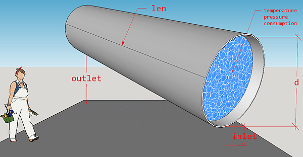

Calculate pressure drop in straight cylidrical steel pipe of district heating system (where water is a heat carrier) that is a result of pipe orientation in space (hydrostatic component), and friction between water and internal wall of pipe.
Usage
dropp(
temperature = 130,
pressure = mpa_kgf(6),
flow_rate = 1276,
d = 1,
len = 1,
roughness = 0.006,
inlet = 0,
outlet = 0,
method = "romeo"
)Arguments
- temperature
temperature of heat carrier (water) inside the pipe, [°C]. Type:
assert_double.- pressure
absolute pressure of heat carrier (water) measured at the entrance (inlet) of pipe, [MPa]. Type:
assert_double.- flow_rate
amount of heat carrier (water) that is transferred by pipe during a period, [ton/hour]. Type:
assert_double.- d
internal diameter of pipe, [m]. Type:
assert_double.- len
pipe length, [m]. Type:
assert_double.- roughness
roughness of internal wall of pipe, [m]. Type:
assert_double.- inlet
elevation of pipe inlet, [m]. Type:
assert_double.- outlet
elevation of pipe outlet, [m]. Type:
assert_double.- method
method of determining Darcy friction factor. Type:
assert_choice. (see Details)
Details
The underlying engineering model for calculation of pressure drop considers only two contributions (components):
Pressure drop due to gravity (hydrostatic component).
Pressure drop due to friction.
The model does not consider any size changes of pipe and presence of fittings.
For the first component that depends on pipe position in space the next figure illustrates adopted disposition of pipe.

So, the expression for the first component can be written as:
$$g \rho (outlet - inlet)$$
where g - is gravity factor, \(m/s^2\), and \(\rho\) - density
of water (heat carrier), \(kg/m^3\); inlet and outlet
are appropriate pipe elevations (under sea or any other adopted level),
\(m\).
The second component comes from
Darcy–Weisbach equation
and is calculated using heating carrier regime parameters (temperature,
pressure, flow_rate). Temperature and pressure values of
heat carrier define water properties according to
IAPWS formulation.
Several methods for calculating of Darcy friction factor are possible and limited to the next direct approximations of Colebrook equation:
- romeo
Romeo, Royo and Monzon, 2002
- vatankhan
Vatankhan and Kouchakzadeh, 2009
- buzelli
Buzzelli, 2008
According to Brkic, 2011 approximations errors of those methods do not
exceed 0.15 % for the most combinations of
Reynolds numbers and
actual values of internal
wall roughness of pipe.
References
W.Wagner et al. The IAPWS Industrial Formulation 1997 for the Thermodynamic Properties of Water and Steam, J. Eng. Gas Turbines Power. Jan 2000, 122(1): 150-184 (35 pages)
M.L.Huber et al.New International Formulation for the Viscosity of \(H_2O\), Journal of Physical and Chemical Reference Data 38, 101 (2009);
D.Brkic. Journal of Petroleum Science and Engineering, Vol. 77, Issue 1, April 2011, Pages 34-48.
Romeo, E., Royo, C., Monzon, A., 2002. Improved explicit equation for estimation of friction factor in rough and smooth pipes. Chem. Eng. J. 86 (3), 369–374.
Vatankhah, A.R., Kouchakzadeh, S., 2009. Discussion: Exact equations for pipeflow problems, by P.K. Swamee and P.N. Rathie. J. Hydraul. Res. IAHR 47 (7), 537–538.
Buzzelli, D., 2008. Calculating friction in one step. Mach. Des. 80 (12), 54–55.
Examples
library(pipenostics)
# Typical pressure drop for horizontal pipeline segments
# in high-way heating network in Novosibirsk
dropp(len = c(200, 300))
#> [1] 0.0007000666 0.0010500999
#[1] 0.0007000666 0.0010500999